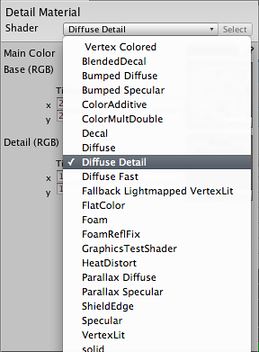

How do I use Detail Textures?
A Detail texture is a small, fine pattern which is faded in as you approach a surface, for example wood grain, imperfections in stone, or earthly details on a terrain. They are explicitly used with the Diffuse Detail shader.
Detail textures must tile in all directions. Color values from 0-127 makes the object it's applied to darker, 128 doesn't change anything, and lighter colors make the object lighter. It's very important that the image is centered around 128 - otherwise the object it's applied to will get lighter or darker as you approach.
- Draw or find a grayscale image of the detail texture.

The Detail Texture
The Levels - Save the image next to your main texture.
- In Unity, select the image and under "Generate Mip Maps", enable Fades Out and set the sliders to something like this in the Import Settings in the Inspector.
- The top slider determines how small the texture should before before beginning to fade out, and the bottom determines how far away it is before the detail texture completely disapear.

s. - In the Material Inspector on the right, select from the Shader drop-down:
 - Drag your texture from the Project View to the Detail texture slot.
- Set the Tiling values to a high value

Page last updated: 2009-02-16